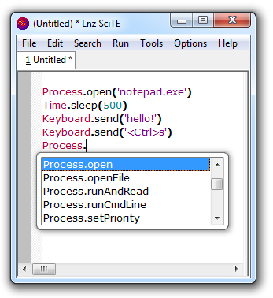

LnzScript lets you automate Windows with JavaScript.
s');" />
You can script macros for frequently performed actions, write quick one-off scripts in the editor,
and write tests for your software's UI.
Download LnzScript 0.5 , 2.4Mb
features:
- 180+ available functions, documented and separated into namespaces
- comes with a full editor + optional autocompletion
- reads/writes/renames files, edits the registry, starts processes and reads their stdout
- simulates mouse+keyboard actions, and can send input to specific controls by id for better robustness.
- access the clipboard, resize windows, and retrieve text from dialogs.
- and, it's all of this from ECMAScript (JavaScript)!
how is this different than AutoIt?
- the editor has interesting shortcuts, like executing unsaved scripts
- the provided functions are organized into namespaces
- syntax where it is natural to organize code into functions, and not deal with Goto/While/Wend keywords.
- you can include shared modules with the built-in include() function.
Implemented with win32 api, AutoItX, QtScript, and Qt Toolkit. When I wrote this in 2008, JavaScript mostly ran in the browser, but times have changed.
To run scripts from hotkeys, just install Clavier+ (a useful open source tool) and
point it at your script.